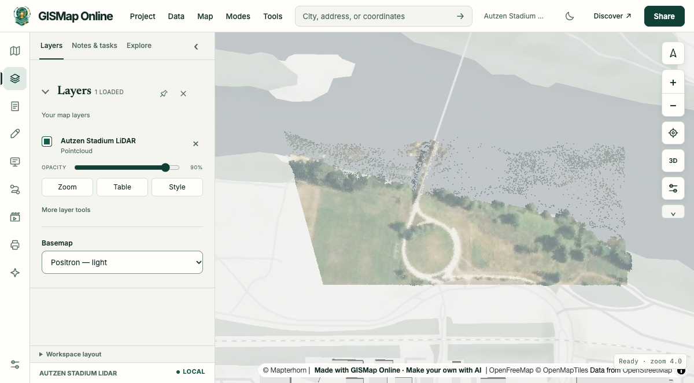

AI prompt example
A LiDAR view
Show this LiDAR file in 3D: autzen_trim.las from the PDAL samples.

Prompt
Show this LiDAR file in 3D: autzen_trim.las from the PDAL samples.
Link
https://gismap.online/#map=json:%7B%22version%22%3A1%2C%22title%22%3A%22Autzen%20Stadium%20LiDAR%22%2C%22basemap%22%3A%22gray-vector%22%2C%22layers%22%3A%5B%7B%22url%22%3A%22https%3A%2F%2Fraw.githubusercontent.com%2FPDAL%2FPDAL%2Fmaster%2Ftest%2Fdata%2Flas%2Fautzen_trim.las%22%2C%22type%22%3A%22pointcloud%22%2C%22title%22%3A%22Autzen%20Stadium%20LiDAR%22%2C%22scene3d%22%3A%7B%22colorBy%22%3A%22rgb%22%2C%22pointSize%22%3A2%7D%7D%5D%7DWhat the agent says
This is a sample file. A LiDAR layer needs WebGL and the MapLibre engine.
Status reached
loaded, checked 2026-11-01 in headless Chrome. Live services change, and intended features, filter and reopening were not separately verified.